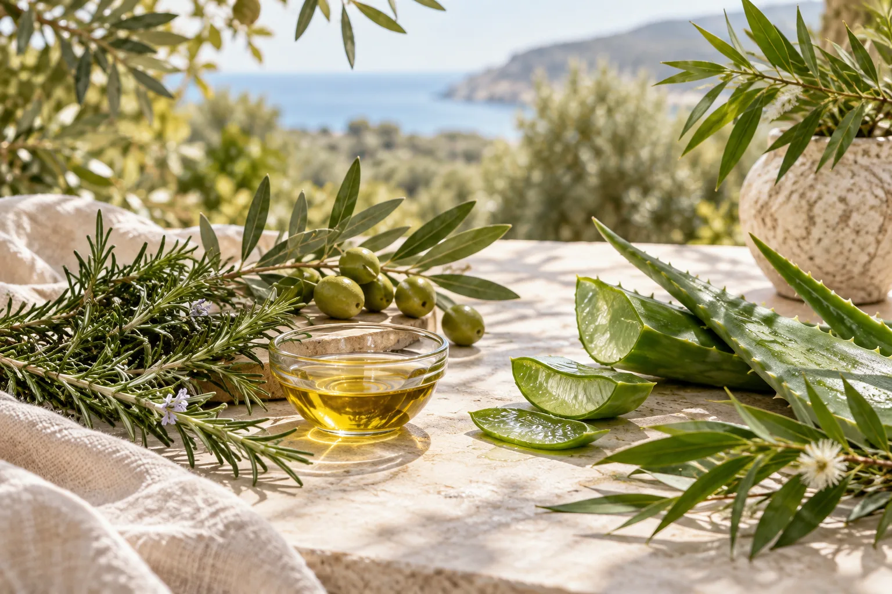

Clarity from the start.
Know the ingredients in our sample, with the full formula to follow before launch.
The beginning of Olir
Our first chapter
in botanical hair care.
A little space for care
The best routines are the ones that feel like yours.
Olir began with a simple idea: make room for hair care that feels personal. Our first sample is the beginning of that journey, built around familiar botanicals and the pleasure of taking time for yourself.
We’re creating Olir for the rhythms of everyday life in Australia. A quiet morning, an evening at home, a few minutes between everything else.
One hair oil to begin. Every detail worth considering.
When I started developing Olir, I wanted to create something honest. The hair care market is filled with loud claims and overnight miracles, but I believe the best results come from simple, consistent routines.
We are currently finalizing the formula and sizing of our first sample. It has been a slow, deliberate process to ensure every ingredient serves a purpose. I'm excited to share the final product with you soon.
If you'd like to follow our progress and be the first to know when we launch, please join our waitlist. We will only reach out when we have meaningful updates to share.

What matters to us
Know the ingredients in our sample, with the full formula to follow before launch.
A small pause in your day. Uncomplicated, unhurried and entirely yours.
We’re taking our first product from sample to release, one detail at a time.
Be here for the beginning